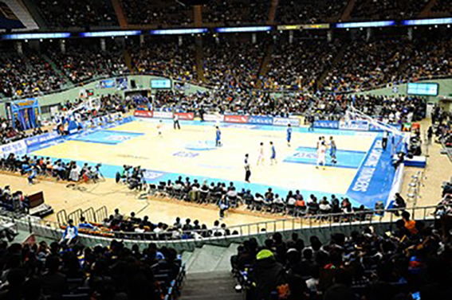
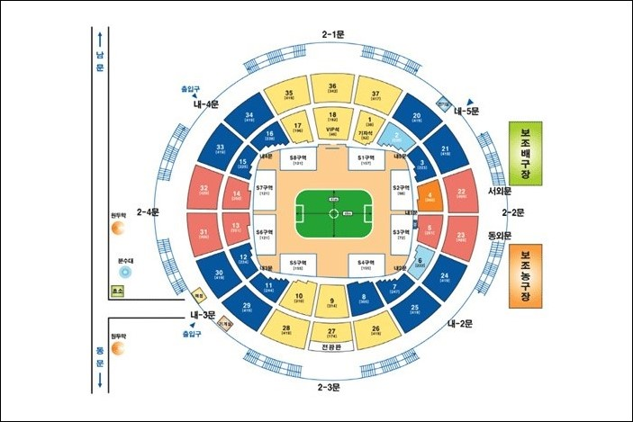
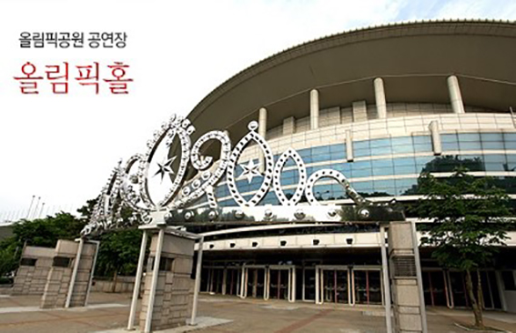
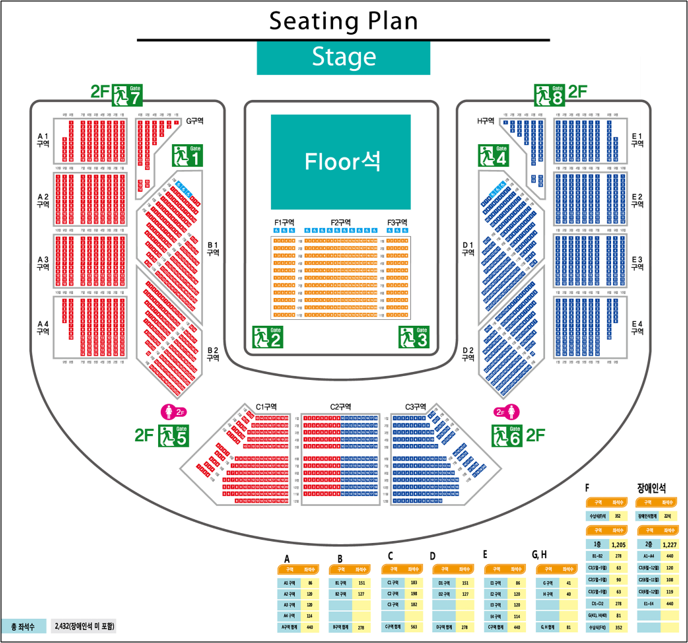

竞技场/体育馆
点击所属行政区，可直接查看周围推荐
- 首尔综合运动场 - 蚕室奥林匹克主竞技场 (Jamsil Olympic Stadium)
-
首尔综合运动场 - 蚕室室内体育馆


场地类型：大型场地（室内）
座位数量：11,032
最多容纳：20,000
具体地址：首尔松坡区蚕室洞10号
近期演出:
2019.12.14-15 金在奂: KRW99,000-110,000(约RMB600-660)
2019.12.21-24 Nell: KRW99,000-143,000(约RMB600-860)
2019.12.28-29 超级乐队Top3: KRW88,000-121,000(约RMB530-860)
附近地铁：
2号线/9号线综合运动场(Sports Complex)站6/7号出口
仁川机场出发：
约2小时，机场铁路至麻谷渡口(Magongnaru)站换乘9号线
推荐住宿地点：
2号线江南(Gangnam)站附近较为便利，共4站距离
- 首尔综合运动场 - 蚕室奥林匹克辅助竞技场
- 奥林匹克公园 - 奥林匹克体操馆 (KSPO Dome)
- 奥林匹克公园 - 奥林匹克SK手球场
-
奥林匹克公园 - 奥林匹克大厅


场地类型：中小型场地（室内）
座位数量：2,432
最多容纳：2,432
具体地址：首尔松坡区奥林匹克路424
近期演出:
2019.12.06-09 10cm: KRW88,000-110,000(约RMB530-660)
2019.12.20-24 DAY6: KRW110,000(约RMB660)
2020.01.04-05 Viction
附近地铁：
5号线/9号线奥林匹克公园(Olympik Park)站3号出口
仁川机场出发：
约2小时，机场铁路至孔德(Gongdeok)站换乘5号线
推荐住宿地点：
2号线蚕室(Jamsil)站附近较为便利，打车约10分钟到达
- 首尔世界杯体育场 (Seoul World Cup Stadium)
- 高尺天空巨蛋球场 (Gocheok Sky Dome)
- 奖忠体育馆 (JangChung Arena)